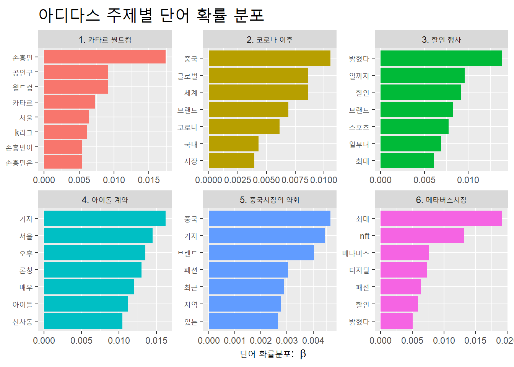
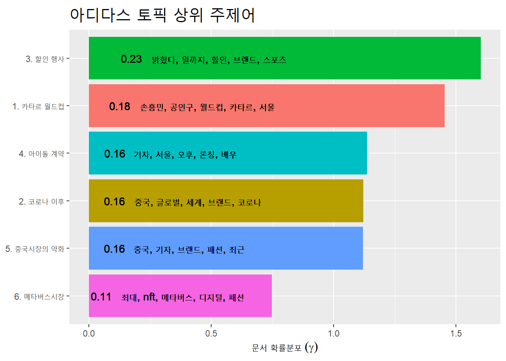
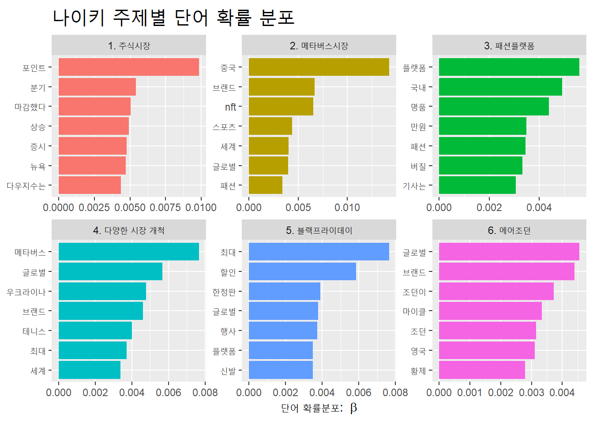
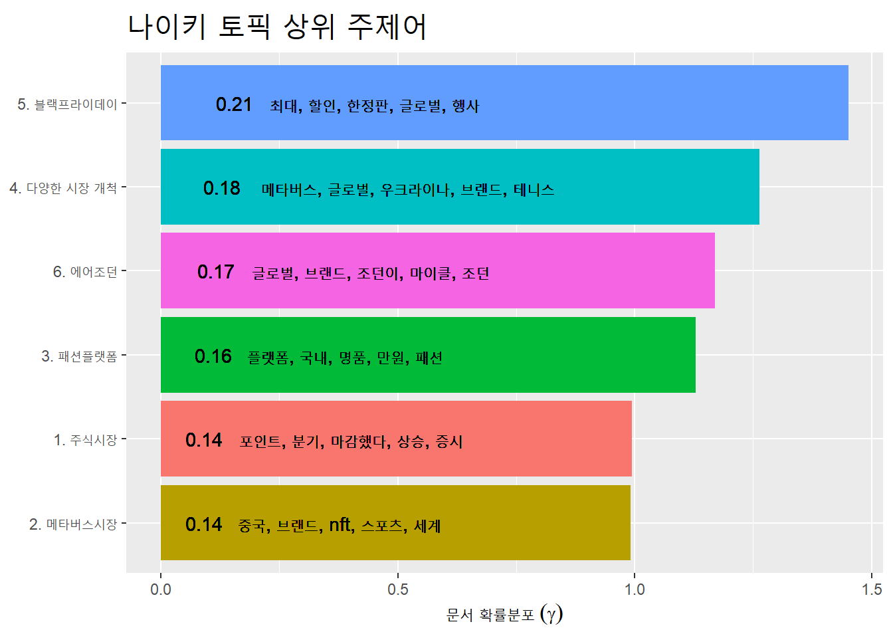

Chapter 7 토픽모델링
7.1 아디다스 토픽모델링
s_ttk <- s_df2 %>%
mutate(text = str_remove_all(text, "[^(\\w+|\\s)]")) %>%
unnest_tokens(word, text, token = "regex", drop = F)
s_ttk <-
s_ttk %>%
filter(str_detect(word, "[:alpha:]+"))%>%
filter(!word %in% c("아디다스","있다","일까지","참석해","열린","오는"))
s_cdf <- s_ttk %>%
group_by(ID) %>%
summarise(text2 = str_flatten(word, " ")) %>%
ungroup() %>%
inner_join(s_df2, by = "ID")
library(stm)## stm v1.3.6 successfully loaded. See ?stm for help.
## Papers, resources, and other materials at structuraltopicmodel.comlibrary(tm)## 필요한 패키지를 로딩중입니다: NLP##
## 다음의 패키지를 부착합니다: 'NLP'## The following object is masked from 'package:ggplot2':
##
## annotateprocessed <- s_df2 %>%
textProcessor(
documents = s_cdf$text2,
metadata = .,
wordLengths = c(2, Inf))## Building corpus...
## Converting to Lower Case...
## Removing punctuation...
## Removing stopwords...
## Removing numbers...
## Stemming...
## Creating Output...out <-
prepDocuments(processed$documents,
processed$vocab,
processed$meta,
lower.thresh = 0)docs <- out$documents
vocab <- out$vocab
meta <- out$metatopicN <- c(3, 10)s_stm_fit <-
stm(
documents = docs,
vocab = vocab,
K = 6,
data = meta,
max.em.its = 75,
init.type = "Spectral",
seed = 25,
verbose = F
)7.1.1 결과
s_topic_name <- tibble(topic = 1:6,
name = c("1. 카타르 월드컵",
"2. 코로나 이후",
"3. 할인 행사",
"4. 아이돌 계약",
"5.",
"6. 메타버스시장"))
s_td_beta <- s_stm_fit %>% tidy(matrix = 'beta')
s_topic_name <- s_td_beta %>%
group_by(topic) %>%
slice_max(beta, n = 7) %>%
left_join(s_topic_name, by = "topic")
s_topic_name %>%
ggplot(aes(x = beta,
y = reorder_within(term, beta, name),
fill = name)) +
geom_col(show.legend = F) +
facet_wrap(~name, scales = "free") +
scale_y_reordered() +
labs(x = expression("단어 확률분포: "~beta), y = NULL,
title = "아디다스 주제별 단어 확률 분포") +
theme(plot.title = element_text(size = 20))
.
s_td_gamma <- s_stm_fit %>% tidy(matrix = "gamma")
s_top_terms <-
s_td_beta %>%
group_by(topic) %>%
slice_max(beta, n = 5) %>%
select(topic, term) %>%
summarise(terms = str_flatten(term, collapse = ", "))
s_gamma_terms <-
s_td_gamma %>%
group_by(topic) %>%
summarise(gamma = mean(gamma)) %>%
left_join(s_top_terms, by = 'topic') %>%
left_join(s_topic_name, by = 'topic')
s_gamma_terms %>%
ggplot(aes(x = gamma, y = reorder(name, gamma), fill = name)) +
geom_col(show.legend = F) +
geom_text(aes(label = round(gamma, 2)),
hjust = 1.15) +
geom_text(aes(label = terms),
hjust = -0.05) +
labs(x = expression("문서 확률분포"~(gamma)), y = NULL,
title = "아디다스 토픽 상위 주제어") +
theme(plot.title = element_text(size = 20))
7.2 나이키 토픽모델링
m_ttk <- m_df2 %>%
mutate(text = str_remove_all(text, "[^(\\w+|\\s)]")) %>%
unnest_tokens(word, text, token = "regex", drop = F)
m_ttk <-
m_ttk %>%
filter(str_detect(word, "[:alpha:]+"))%>%
filter(!word %in% c("나이키", "일까지","일부터","있다","밝혔다","대한","최근","지난"))
m_cdf <- m_ttk %>%
group_by(ID) %>%
summarise(text2 = str_flatten(word, " ")) %>%
ungroup() %>%
inner_join(m_df2, by = "ID")
library(stm)
library(tm)
processed <- m_df2 %>%
textProcessor(
documents = m_cdf$text2,
metadata = .,
wordLengths = c(2, Inf))## Building corpus...
## Converting to Lower Case...
## Removing punctuation...
## Removing stopwords...
## Removing numbers...
## Stemming...
## Creating Output...out <-
prepDocuments(processed$documents,
processed$vocab,
processed$meta,
lower.thresh = 0)docs <- out$documents
vocab <- out$vocab
meta <- out$metatopicN <- c(3, 10)m_stm_fit <-
stm(
documents = docs,
vocab = vocab,
K = 6,
data = meta,
max.em.its = 75,
init.type = "Spectral",
seed = 25,
verbose = F
)7.2.1 결과
m_topic_name <- tibble(topic = 1:6,
name = c("1. 주식시장",
"2. 메타버스시장",
"3. 패션플랫폼",
"4. 메타버스 시장2",
"5. 블랙프라이데이",
"6. 에어조던"))
m_td_beta <- m_stm_fit %>% tidy(matrix = 'beta')
m_topic_name <- m_td_beta %>%
group_by(topic) %>%
slice_max(beta, n = 7) %>%
left_join(m_topic_name, by = "topic")
m_topic_name %>%
ggplot(aes(x = beta,
y = reorder_within(term, beta, name),
fill = name)) +
geom_col(show.legend = F) +
facet_wrap(~name, scales = "free") +
scale_y_reordered() +
labs(x = expression("단어 확률분포: "~beta), y = NULL,
title ="나이키 주제별 단어 확률 분포") +
theme(plot.title = element_text(size = 20))
7.2.1.3 러.우전쟁으로 러시아에 있는 나이키 매장을 철수했기 때문입니다.
m_td_gamma <- m_stm_fit %>% tidy(matrix = "gamma")
m_top_terms <-
m_td_beta %>%
group_by(topic) %>%
slice_max(beta, n = 5) %>%
select(topic, term) %>%
summarise(terms = str_flatten(term, collapse = ", "))
m_gamma_terms <-
m_td_gamma %>%
group_by(topic) %>%
summarise(gamma = mean(gamma)) %>%
left_join(m_top_terms, by = 'topic') %>%
left_join(m_topic_name, by = 'topic')
m_gamma_terms %>%
ggplot(aes(x = gamma, y = reorder(name, gamma), fill = name)) +
geom_col(show.legend = F) +
geom_text(aes(label = round(gamma, 2)),
hjust = 1.15) +
geom_text(aes(label = terms),
hjust = -0.05) +
labs(x = expression("문서 확률분포"~(gamma)), y = NULL,
title = "나이키 토픽 상위 주제어") +
theme(plot.title = element_text(size = 20))